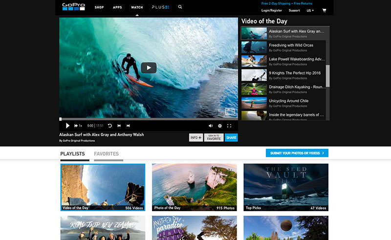
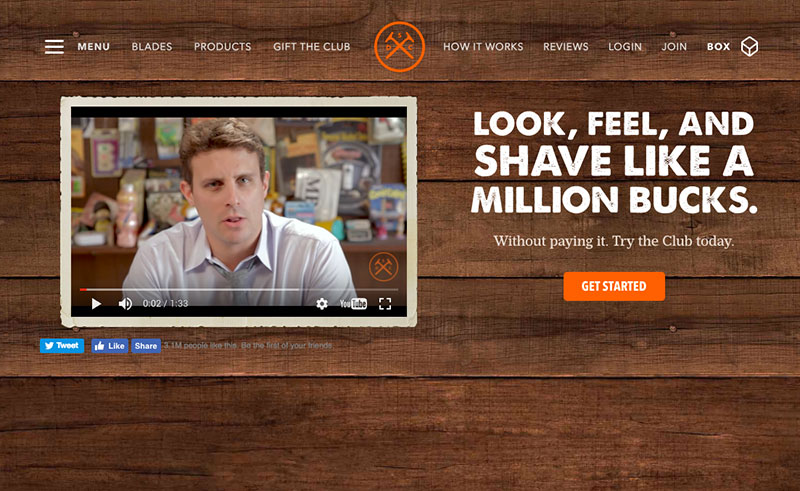
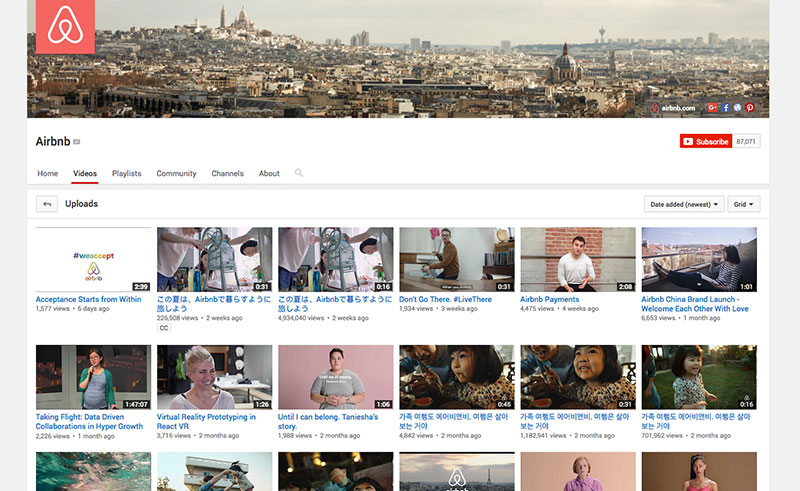
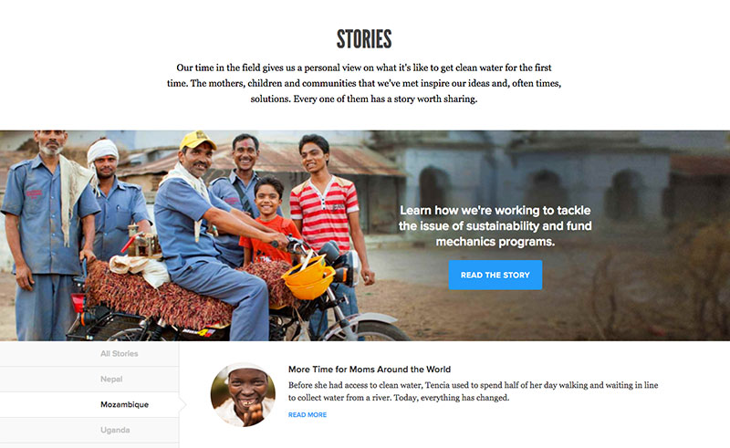

Storytelling is one of the most powerful ways we humans can use to communicate our thoughts and ideas. A great story captures the audience’s imagination. It sticks, and it also sells. In today’s digital age, the narrative landscape is shifting. Branded storytelling is less monologue and more dialogue, favoring engagement over just eyeballs. Stories happen across platforms, often in real-time. They weave in the emotional with the rational—a significant departure from traditional advertising. And when they’re authentic, relevant and reflect the needs and interests of target audiences, stories have the potential to break through and make genuine connections with the right people at the right time.
The narrative itself has changed, and we are changing with it. Recent studies show that the attention span for millennials is 60% shorter than previous generations. That’s no surprise–endless entertainment options, from smartphones to tablets to television have been with them since birth. And it’s not only millennials that have been affected by digital technology. Since the year 2000, the average attention span has dropped from 12 seconds down to 8 (for reference, the average for a goldfish is 9 seconds). As our ability to pay attention continues to shrink, brands must figure out how to establish meaningful connections with their audiences and create loyalty—quickly.
Here are some great examples of brands that are using stories to do just that:
GoPro
When it comes to customer-driven storytelling, GoPro has a winning formula: customers use the product to show off what they personally can do with it, which in turn also shows off the product’s capabilities. GoPro makes it easy for customers to put the spotlight on their stories and then features the best of the best online and in stores.

Dollar Shave Club
Dollar Shave Club’s homepage video quickly went viral and has become the gold standard to which all other explanatory videos aspire. It tells the story of the blades and the brand’s mission using irreverent humor and the company’s actual founder. Produced for just $4,500, this story educates, entertains and was largely responsible for the brand’s “overnight” success.

Airbnb
Airbnb’s stories highlight the people who own the homes listed and the travelers who visit there. These emotional videos, seen online and on broadcast television, do a brilliant job of conveying the benefits of using Airbnb while highlighting the human connection between hosts and their visitors.

charity: water
Non-profit charity: water features the stories of the people to whom they bring clean drinking water. They show how donations are transformed into self-sustaining clean water infrastructure in developing communities. charity: water creates further emotional connections by interspersing stories with beautiful, moving photos from the communities in which they’re working in. The organization offers these powerful assets to those who want to create their own story-driven charity water campaign on social media.

Today’s great brand stories share traits that enable them to engage, educate, entertain and inspire audiences while achieving their marketing objectives. Here are a few to keep in mind when coming up with stories for your brand:
Be human
People don’t necessarily bond with brands alone, but they can deeply connect with the humans who relay the brand’s message. Having your founder, staffers and/or customers help tell your story is a powerful way to accomplish this.
Show us, don’t tell us
Tell someone five great reasons they should buy your product and they will remember nothing. Share a story about how you invented a product that quietly transformed an entire neighborhood in Pittsburgh, and they will remember the product, the name of the town and your URL. Visuals or not, illustrating your point through the narrative is much more powerful and memorable. Statistics tell. Branded storytelling sells.
Speak to your audience, not every audience
If you try to relate to everyone, you’ll end up connecting with no one. Instead, focus on telling stories that communicate directly to your target. Spend time thinking about what they’d want to hear and why. According to Seth Godin, the most effective stories match the worldview of a tiny audience—and then that tiny audience spreads the story.
Keep it simple
The most successful brand stories aren’t complicated. They are straightforward and easy to “get”. Remember that you don’t have to tell the WHOLE story, just the best part.
Branded storytelling is an art that has the potential to transform your business. It can help you increase brand loyalty, trust, and connect with customers in meaningful ways. In this multi-platform digital world, there’s no one-size-fits-all approach, and that’s precisely what’s magical about narrative today. You have the option to explore different methods of content creation and look to those around you for inspiration. Great stories are everywhere; you just need to be on the lookout for them.